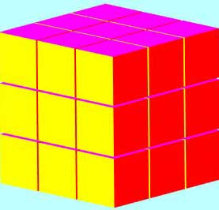
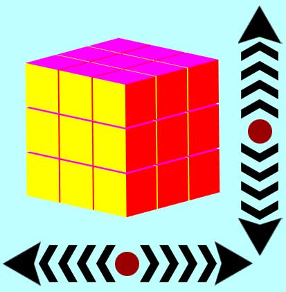
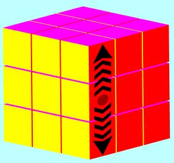

 To Win: solve cube by getting all 6 sides to be of same color and return to original starting position. As shown in picture to the left.
To Rotate The Cubes Perspective
 Click and drag towards the side of the screen in the direction you wish to rotate the cube. Wait for the animation to finish and then you can rotate cube again.
To Move A Slice On The Cube
 Click on the slice you wish to move and drag toward the direction of the desired moved then release the mouse button. Make sure you stay within the slice's region, or you will move the entire cube if you don't release the drag inside the slice's region. If trying to move a slice up, it's best to start at bottom cube in slice and end in the top cube of slice, and vice versa for down move.
Click Instructions Button again to close this box